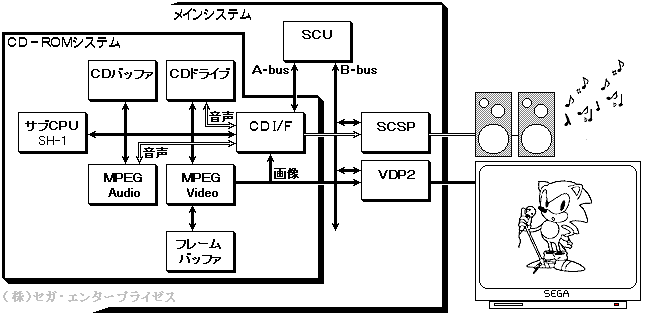
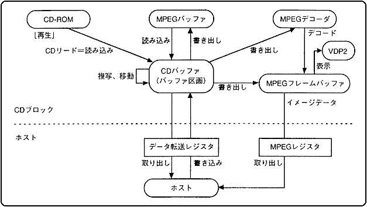
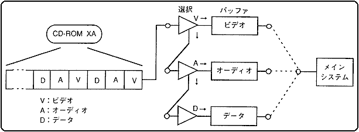
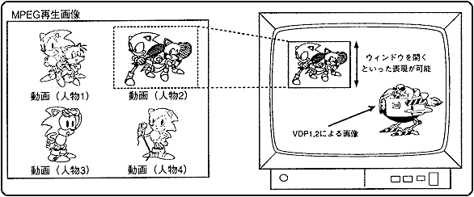
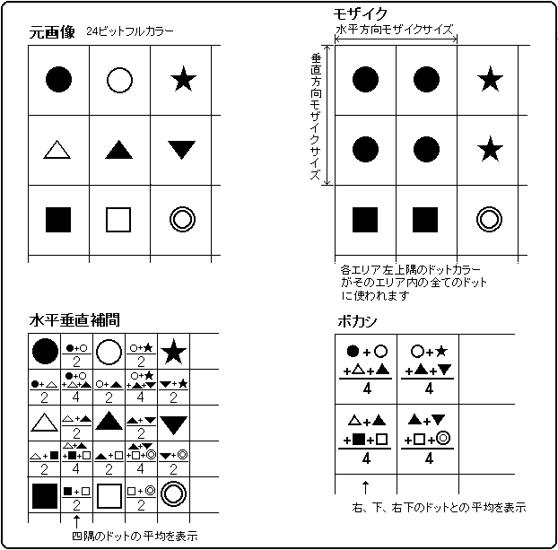
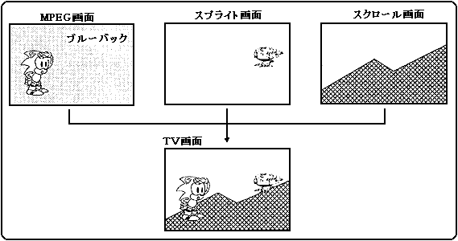

★HARDWARE Manual
★セガサターン概要マニュアル
★HARDWARE Manual
★セガサターン概要マニュアル
▲戻る｜
進む▼
■3.6 ＣＤ−ＲＯＭ
CD-ROMシステムは、内部にCPUとバッファRAMを搭載しており、メインシステム
とは独立に動作できます。予めメインシステムから条件を設定しておくことにより、
アプリケーションの構造に適したフレキシブルなバッファ管理を実現します。
●システム構成
CD-ROMシステムは、メインシステムからCD I/Fを介して、コマンドを与えるだけ
で動作します。サブCPUは、メインシステムからのコマンドを解釈して、CD-ROMドライブ、
CDDバッファ等を制御して、データの読み込み、動画再生、音声再生を行います。
動画再生、音声再生には、動画圧縮の国際標準であるMPEG方式を採用し、専用LSI
「MPEG / Video LSI」および「MPEG / Audio LSI」を用いています。
図3.29にシステム構成を示します。
MPEG / Videoには、サブCPU、CDバッファ、フレームバッファ、C/D I/Fが接続
されます。CDバッファから圧縮画像データを受け取り、フレームバッファに
再生画像データを書き込みます(描画)。描画されたフレームバッファのデータは、
レジスタの設定に従ってエフェクトが施され、画面表示制御を行うVDP2を介して
ディスプレイ装置に表示します。あるいは、CD I/F , SCUを介してVDP1 , VDP2の
VRAMに転送することもできます。
MPEG / Audioは、CDバッファから圧縮音声データを受け取り、ステレオ1chの
音声データを出力します。この音声データはSCSPを介して音として出力されます。
図3.28 CD-ROMシステム構成

●システム仕様
CD-ROMのシステム仕様を表3.10に、CDドライブの仕様を表3.11に示します。
表3.10 CD-ROMシステム仕様
| 項 目 | 仕 様 | 備 考 |
1 | G/Aレジスタ幅 | 16ビット | |
2 |
1/3ストローク
平均アクセス
タイム
注 |
試験前 信頼性試験後
倍 速 500ms以下 700ms以下
標準速 800ms以下 1000ms以下 |
CDドライブがPLAYコマンドを受信してからPLAYステータスを発行するまでの時間を200回(100往復)測定した平均値 |
3 | 回転速度 | 通常時：620〜1680rpm ２倍速：1240〜3360rpm | |
4 | CDリード速度 | 通常速： 75セクタ/sec＝150KB/sec
２倍速：150セクタ/sec＝300KB/sec | |
5 | トレイの開閉方式 | トップローディング | |
6 | メモリ容量 | RAM 512KB（CDバッファ用） ROM 64KB（BIOS用）
RAM512KB（MPEG用） | |
7 | データ転送速度 | 最大8MB/sec、MPEG動作中最大4MB/sec | |
8 | LED | CDの動作状態により点滅 | |
注
- 1/3ストロークは１５分００秒００フレームから３５分００秒００フレームまで。
- 上記の値はあくまで参考値であり、動作を保証するものではありません。
表3.11 CDドライブ仕様
| | 項 目 | 仕 様 | 備 考 |
1 | CD再生 | トラック／インデックス指定再生
フレームアドレス（絶対時間に対応）指定再生
再生再開（ポーズの解除、ピックアップの移動制御）
リピート再生
CD-DAとCD-ROMを同一形式のコマンドで制御可能
スキャン再生
サブコード取得 | |
2 | その他 | マルチセッション対応
エンファシス対応
CD-ROM XAに対応したデコード、エラー訂正
(サブヘッダの認識、ECC処理、リードリトライ処理） | |
●機能
CD-ROMシステムの主な機能を次に示します。
- ストリームの選択
- 並列処理
- MPEG機能
- 対応規格
CD-ROMシステムは、CD-ROMから読み込んだデータを一旦CDバッファに格納します。
格納したデータは、メインシステムからのコマンドに応じてMPEGやメインシステム
に対してデータの書き込み及び読み出しをします。
CD-ROMシステムのデータの流れを図3.29に示します。
図3.29 CD-ROMシステムのデータの流れ

●ストリームの選択
CD-ROMからのデータの流れをストリームと呼びます。ストリームには、音声データ、
映像データ及びプログラムデータがあります。ストリーム選択機構は、データの種別
を選択し、メインシステムおよびMPEGにデータを送ります(図3.30)。ストリーム選択機構
の制御内容を次に示します。
- ストリームデータをCDバッファに蓄積し、データ種別に応じて選択します。
- CD-ROM,MPEGデコーダ等のデバイスからのデータを統一的に制御します。
- ストリームの選択条件をコマンドによって設定します。
図3.30 ストリーム選択機構

●並列処理
CD-ROMシステムは、ストリームの読み込み、ストリームの選択およびCDドライブ
の制御をメインシステムとは独立に動作します。さらに複数のストリーム選択機構
を設定しているので並列処理ができます。
●MPEG機能
MPEGは、音声付き動画の再生を行います。
再生前の画像データは約1/50に、音声データは約1/10に圧縮されているため、
CDに74分記録することができます。また、専用LSIで再生を行うため、CPUに全く
負担がかからず、高画質の動画を再生しながらゲームを行うことができます。
◆MPEG/Videoの機能
サターンのMPEG / Videoには、サターン専用にカスタマイズした各種の特殊機能
を搭載しています。
- ウィンドウ機能
図3.31のように、再生した画像の一部を切り出して、TV画面内に、
任意のサイズで表示する機能です。この機能を用いることにより、
「MPEG再生画像の表示位置、表示サイズ変更」「複数画面のうち、
一つを選んで表示」「ズームイン、ズームアウト」等を行うことができます。
図3.31 ウィンドウ機能

- 補間機能
MPEG再生画像は、最大352×240ドットですが、水平、垂直補間により
最大704×480ドットの解像度で表示可能で、ちらつきの少ない滑らかな
表示ができます。
- ボカシ機能
ボカシ機能は、水平垂直に隣り合った4ドットのカラーデータの平均を
表示する機能で、遠くの背景をぼかすような効果を出すことができます。
- モザイク機能
MPEG再生画像を水平方向、垂直方向、指定したサイズに分割し、それぞれの
エリアの左上のドットのカラーを、そのエリア内の全てのドットで表示します。
水平、垂直独立にフルスクリーンサイズまで指定できます。
図3.32 補間、ボカシ、モザイク機能

- フェード機能
画面の輝度、色差信号に倍率を与えて表示する機能で、フェードイン、
フェードアウト等に使用します。オフセット値を加減する方式ではないので、
正しく輝度だけを変えることができます。また色差信号を変えることにより、
モノクロ表示、または表示色を濃くしたりすることもできます。
- クロマキー機能
図3.33のように、透明ドット入りの動画を再生する機能です。
クロマキーとは、「人物などを青い壁面の前で撮影し、その画面から
青色以外の部分を抜き出して別の絵に重ねる」といった手法のことです。
既存のMPEG LSIではMPEG動画像を背景でしか使えませんが、サターンでは
クロマキー機能により、MPEG動画像をスプライト、スクロールの上に重ね
て表示することができます。
図3.33 クロマキー機能

- 画面取り込み機能
MPEGで再生した動画像を、メインシステム側に取り込む機能です。
この機能によりMPEGで再生した動画像をスプライトとして扱ったり、
テクスチャデータとして利用したり、VDP1、VDP2の機能を施して表示
したり、更に複数の動画を再生することが可能になります。
MPEG動画のデータ量はCDからのデータ量の50倍であり、転送速度も
CDバッファからの転送より高速なので、テクスチャデータの高速書
き換えにも利用できます。
- 高精細静止機能
704ドット×480ドットの高精細静止画を表示する機能です。
フルカラーの高精細画像は、メインシステム側では表示できませんが
(フルカラーでは352×240ドットまで)、高精細静止画機能を使用すると、
サターンの最大色数の画像を表示することができます。
- ポーズ機能、フリーズ機能
ポーズ機能は、動画を任意のフレームで静止させる機能で、スロー再生、
コマ送り再生が可能です。
フリーズ機能は、動画を任意のフレームで記憶する(画像メモリ)機能で、
ストロボ再生が可能です。
- 分岐再生機能
MPEGではCDバッファメモリに圧縮画像データを蓄えることができるので、
CDのシーク(トラックサーチ)中でも動画を再生することができます。
そのため、別トラックの動画にジャンプしてもLDのように静止画面にならず、
動画を再生し続けます。分岐再生機能により、MPEGでは、分岐点が判断できない
分岐再生を実現できます。更に同じ動画を繰り返す"ループ再生"もできます。
- ◆MPEG/Audioの機能
- MPEG / Audioで再生された音声データは、CD-DA(音楽用CD)と同じ経路
でSCSPに送られ、様々なエフェクトを施すことができます。
- 圧縮率可変
用途に応じて圧縮率を選ぶことができ、1/3.5〜1/21の圧縮が選択できます。
1/21の圧縮を用いると、CDに50時間分の音声を記録することができます。
長大なRPG、ADVでも、全てのセリフ、ナレーションを音声で行うことができます。
- オンメモリ再生機能
MPEG / Audioは、1/3.5〜1/21の圧縮ができますが、例えば1/21の圧縮を用
いてCDバッファメモリ4Mビットのうちの半分をMPEG / Audio用に使用すれば、
CDをアクセスすることなく64秒の音声が再生できます。そのため、待ち時間のない
音声再生ができます。更に短いセリフをつなげて長い会話にすることもできます。
●対応規格
CD-ROMシステムの対応規格を表3.12に示します。
表3.12 対応規格
規 格 | 説 明 |
CD-DA | CDに入っている音の規格名で、RED BOOK国際規格に基づいています。
サンプリング周波数44.1KHz,量子化ビット16ビットステレオです。 |
CD-G,CD-EG | 音楽CDのフォーマット領域にグラフィックスなどのデータを収録しています。
表示色16色、CD-DAの音質を採用しています。 |
CD-ROM | 音楽CD（CD-DA）と同じ物理フォーマットにコンピュータデータを記録できるよ
うに定められた規格です。YELLOW BOOK国際規格に基づいています。 |
CD-ROM XA | CD-ROMを拡張し、画像や音声を平行して再生するためのインタリーブ記録を可
能とした記録フォーマットです。 |
EB
（電子ブック） | ソニーの電子ブックプレーヤ「データディスクマン」が採用したCD-ROMソフト
の記録フォーマットです。 |
Photo-CD | 写真をテレビなどのモニタを通して鑑賞できるようにしたシステムです。
CDに最大100コマの写真を収録でき、同じ写真の拡大・縮小が可能です。 |
Video CD
（KARAOKE CD） | MPEGにより圧縮されたビデオを収録しています。CDに最大74分収録でき、高精
細な静止画も最大2000枚再生できます。 |
▲戻る｜
進む▼
★HARDWARE Manual
★セガサターン概要マニュアル
Copyright SEGA ENTERPRISES, LTD., 1997